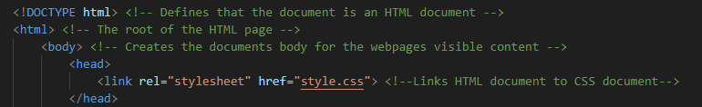

Link HTML to CSS
Prior to coding in your CSS document, it is necessary to link your HTML document to your CSS document so the styling you do in your CSS document appears when you launch your website.
The image below shows how:
Colors
The first thing to learn in CSS is deciding what color to make your background. In order to make the background of you entire website a certain color, you must define what you want to change in your css document. In order to change the background color, you must give the "background-color:" a value inside of your body in CSS.
Below is an example of changing the background color and what it produces
body {
background-color: lightblue;
}In addition to making your entire background, you can also make the background of certain areas a specific color if you wish. For example, you can change the background of headers and paragraph tags.
Below is an example of changing the background color of a header:
Text Font & Color
In addition to bein able to change the background color of headings and paragraph tags, you can also change the color of your text and the size of the text.
In order to change the size of the text, you must edit your CSS document by doing the following:
You finished your introduction to CSS and HTML course!
Hopefully you can use the skills you picked up during this course to create a simple website.
We hope that you will continue learning HTML and CSS to further your knowledge on how to create amazing websites!